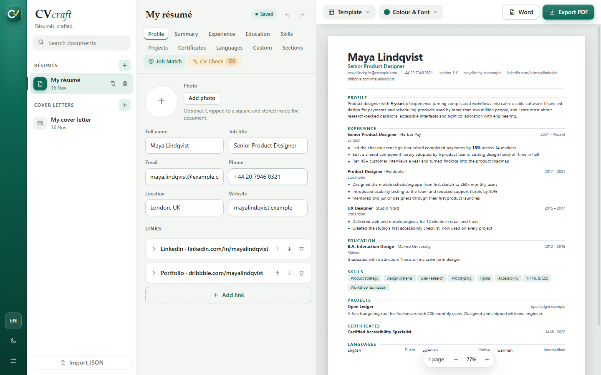
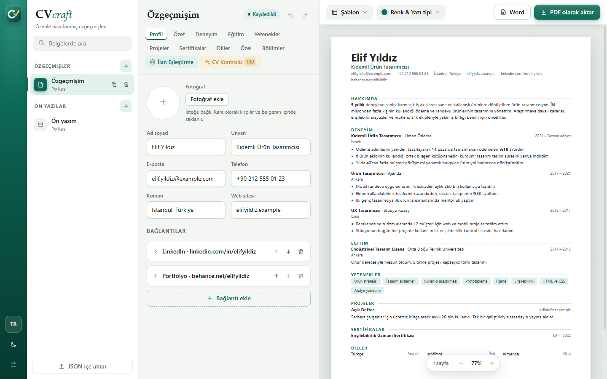
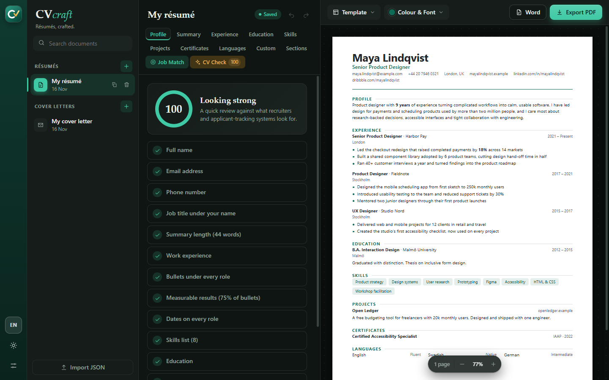

Seven templates
From bold sidebars to a plain single column built for applicant-tracking systems. Switch any time; your content stays put.
Free · English & Türkçe · No account
Write your CV and cover letter side by side with a live A4 preview, check it against what recruiters look for, and export a clean PDF or Word file.
Version 0.1.0 · 98 MB · Windows 10 / 11 (64-bit)


From bold sidebars to a plain single column built for applicant-tracking systems. Switch any time; your content stays put.
A live score with specific fixes: missing contact details, summary length, bullets without numbers, weak phrasing, page count.
Paste a job advert and see which of its key terms your résumé already uses and which are missing.
A print-ready A4 PDF that matches the preview, or an editable .docx when an employer asks for Word.
Link a letter to a résumé and it takes your name, contact details and style from it.
No account and no upload. Your documents are stored on your own device, in the app and in the browser version alike.
Two languages
Work in a Turkish interface and write an English CV, or the other way round. Section headings, dates and capital letters follow the document's language.
Light and dark themes are built in.

Windows may warn that the publisher is unknown because the installer is not code-signed yet. Choose "More info", then "Run anyway".
Clearing your browser data removes your documents. Use "Back up all documents" in Settings to keep a copy. Best in Chrome or Edge.
Yes. There is no paid tier, no trial and no licence key.
On your device only. The Windows app writes one file in your user profile; the web version uses your browser's local storage. CVcraft has no server that receives your documents.
Yes. In Settings choose "Back up all documents" in one, then "Import JSON" in the other.
Use the Plain template for online application forms: it is a single column with no graphics, and its PDF text reads back in the right order. The decorative templates are meant for sending to a person.